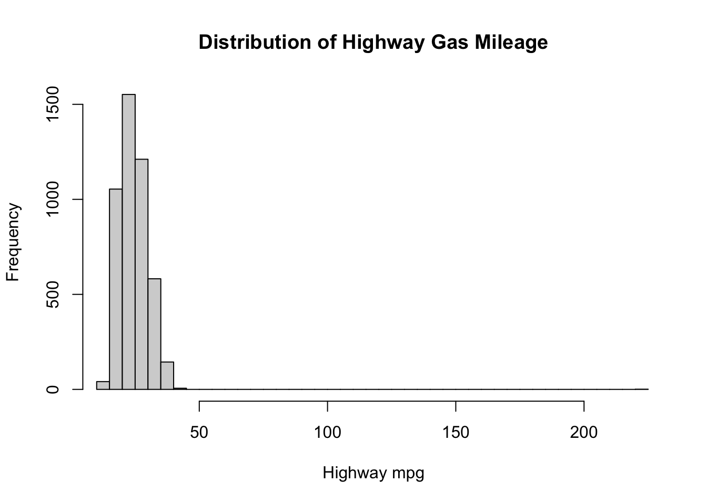
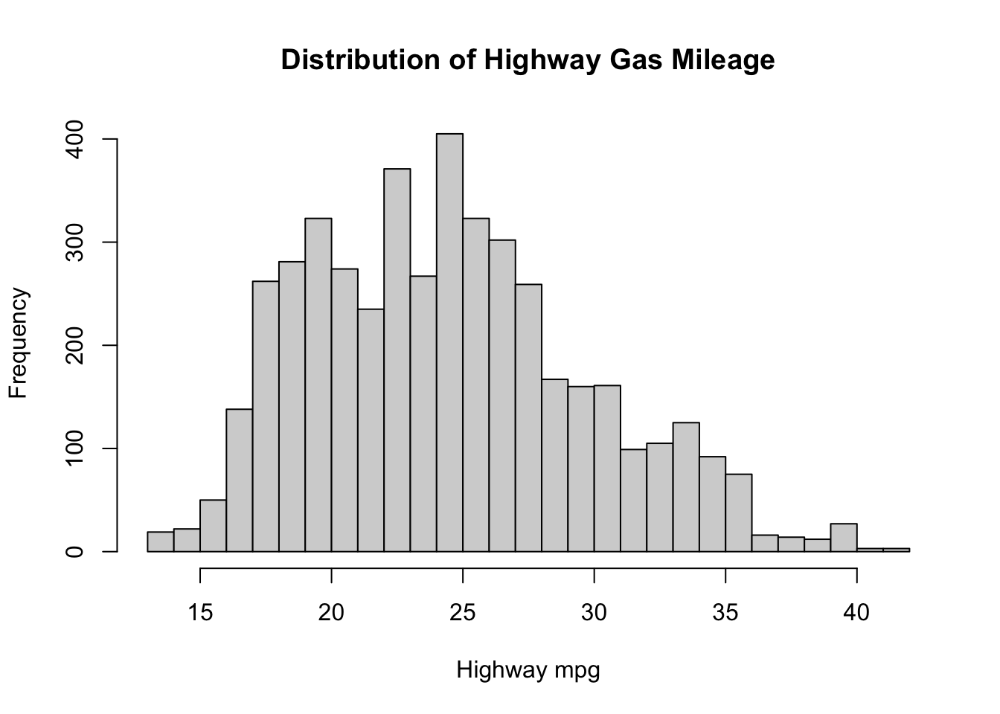
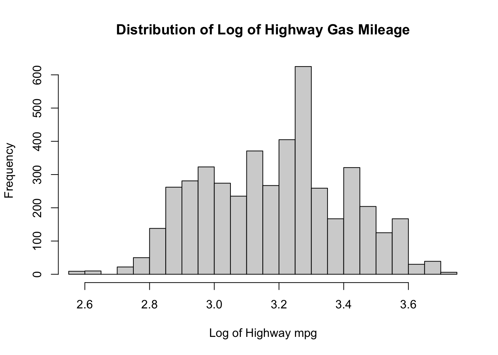
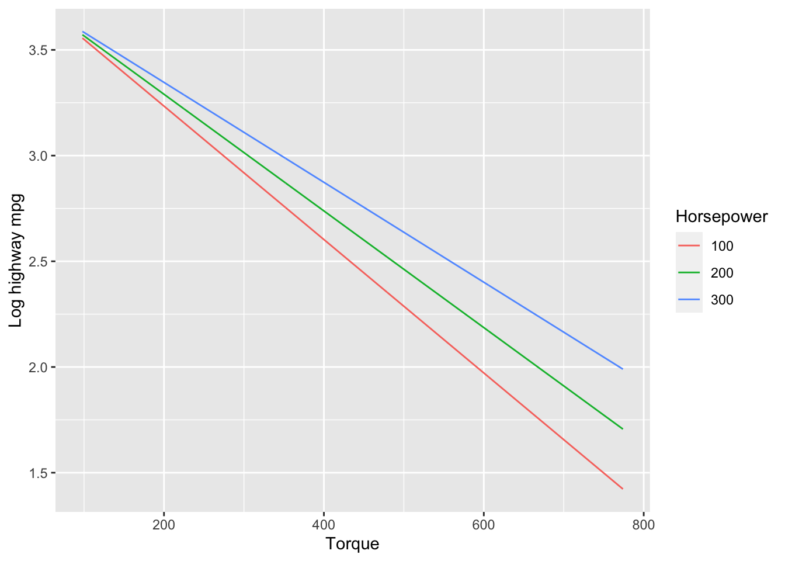

#' Version 1: Loop
#' Function that implements the dice game using a loop with one iteration being
#' one roll of the dice
#'
#' @param num_dice: A positive integer indicating the number of dice to roll
#'
#' @return The total winnings in dollars after all dice are rolled
play_dice_v1 <- function(num_dice) {
profit <- 0
for (i in 1:num_dice) {
profit <- profit - 2 # Costs $2 each roll
roll <- sample(1:6, 1) # Roll a number between 1 and 6
# If you roll a 3 or 5 you win double the roll
if (roll == 3 | roll == 5) {
profit <- profit + (2 * roll)
}
}
return(profit)
}Stats 506 PS2
Github link: https://github.com/alyssawyang/stats506ps2
Problem 1 - Dice Game
1a
Version 1:
Version 2:
#' Version 2: Vectorize
#' Function that implements the dice game using built-in R vectorized functions
#'
#' @param num_dice: A positive integer indicating the number of dice to roll
#'
#' @return The total winnings in dollars after all dice are rolled
play_dice_v2 <- function(num_dice) {
rolls <- sample(1:6, num_dice, replace = TRUE) # Vector containing all output of rolls
profit <- sum(rolls[rolls == 3 | rolls == 5] * 2) # Take only rolls with 3 or 5 and double those values
profit <- profit - 2 * num_dice # Subtract cost to play
return(profit)
}Version 3:
#' Version 3: Table
#' Function that implements the dice game by by rolling all the dice into one and
#' collapsing the die rolls into a single table
#'
#' @param num_dice: A positive integer indicating the number of dice to roll
#'
#' @return The total winnings in dollars after all dice are rolled
play_dice_v3 <- function(num_dice) {
rolls <- sample(1:6, num_dice, replace = TRUE)
rolls_table <- table(rolls) # Store rolls into a table (contains roll # and # times appeared)
profit <- 0
# If 3 or 5, multiply times appeared by 2 * roll number
if ("3" %in% names(rolls_table)) {
profit <- profit + rolls_table[['3']] * 6
}
if ("5" %in% names(rolls_table)) {
profit <- profit + rolls_table[['5']] * 10
}
profit <- profit - 2 * num_dice # Subtract cost to play
return(profit)
}Version 4:
#' Version 4: Apply
#' Function that implements the dice game by using the sapply function to calculate
#' profit for each roll in the vector
#'
#' @param num_dice: A positive integer indicating the number of dice to roll
#'
#' @return The total winnings in dollars after all dice are rolled
play_dice_v4 <- function(num_dice) {
rolls <- sample(1:6, num_dice, replace = TRUE)
# Function that for each roll in rolls, if rolled a 3 or 5,
# return 2 * roll number, else return 0
roll_profits <- sapply(rolls, function(roll) {
if (roll == 3 | roll == 5) {
return(2 * roll)
}
else {
return(0)
}
})
profit <- sum(roll_profits) - 2 * num_dice # Sum the total profits for each roll and subtract cost to play
return(profit)
}1b
Code
# Version 1
cat('Version 1: ', '\n', 'Input 3: ', play_dice_v1(3), '\n', 'Input 3000: ', play_dice_v1(3000), '\n')Version 1:
Input 3: 0
Input 3000: 1878 Code
# Version 2
cat('Version 2: ', '\n', 'Input 3: ', play_dice_v2(3), '\n', 'Input 3000: ', play_dice_v2(3000), '\n')Version 2:
Input 3: -6
Input 3000: 2412 Code
# Version 3
cat('Version 3: ', '\n', 'Input 3: ', play_dice_v3(3), '\n', 'Input 3000: ', play_dice_v3(3000), '\n')Version 3:
Input 3: 0
Input 3000: 2370 Code
# Version 4
cat('Version 4: ', '\n', 'Input 3: ', play_dice_v4(3), '\n', 'Input 3000: ', play_dice_v4(3000), '\n')Version 4:
Input 3: -6
Input 3000: 2164 1c
Code
# Version 1
set.seed(123)
cat('Version 1: ', '\n', 'Input 3: ', play_dice_v1(3), '\n', 'Input 3000: ', play_dice_v1(3000), '\n')Version 1:
Input 3: 6
Input 3000: 2162 Code
# Version 2
set.seed(123)
cat('Version 2: ', '\n', 'Input 3: ', play_dice_v2(3), '\n', 'Input 3000: ', play_dice_v2(3000), '\n')Version 2:
Input 3: 6
Input 3000: 2162 Code
# Version 3
set.seed(123)
cat('Version 3: ', '\n', 'Input 3: ', play_dice_v3(3), '\n', 'Input 3000: ', play_dice_v3(3000), '\n')Version 3:
Input 3: 6
Input 3000: 2162 Code
# Version 4
set.seed(123)
cat('Version 4: ', '\n', 'Input 3: ', play_dice_v4(3), '\n', 'Input 3000: ', play_dice_v4(3000), '\n')Version 4:
Input 3: 6
Input 3000: 2162 1d
library(microbenchmark)
# Performance of all 4 implementations with a low input (1,000)
microbenchmark(
loop = play_dice_v1(1000),
vectorize = play_dice_v2(1000),
table = play_dice_v3(1000),
apply = play_dice_v4(1000)
)Unit: microseconds
expr min lq mean median uq max neval
loop 7116.548 7742.9365 9639.81598 8209.535 9754.4395 33238.241 100
vectorize 75.724 86.2115 96.95134 92.768 99.7255 177.557 100
table 260.460 323.2645 391.44630 370.923 422.5125 1120.494 100
apply 954.992 998.0125 1232.80219 1043.449 1206.9145 6712.603 100# Performance of all 4 implementations with a large input (100,000)
microbenchmark(
loop = play_dice_v1(100000),
vectorize = play_dice_v2(100000),
table = play_dice_v3(100000),
apply = play_dice_v4(100000)
)Unit: milliseconds
expr min lq mean median uq max
loop 780.090325 836.547708 889.67327 876.487482 917.607637 1319.32486
vectorize 6.687355 6.940629 10.24263 7.283881 8.319974 176.22602
table 11.690612 13.250927 14.66573 14.062981 15.415090 29.09298
apply 106.641161 121.772364 138.20985 133.630874 144.530892 280.27788
neval
100
100
100
100Using the microbenchmark package, we can see that the speed of the vectorized functions (version 2) is the fastest version by a significant amount. The second fastest is collapsing the rolls into a table, then is using the apply function, and the slowest version by far is by using loops.
1e
Code
set.seed(123)
#' Function that runs a Monte Carlo simulation on the dice game utilizing the
#' second implementation (vectorized) to determine whether or not the game is fair
#'
#' @param num_trials: A positive integer indicating the number of trials to run
#' @param num_dice: A positive integer indicating the number of dice to roll per trial
#'
#' @return The average profit for the player after the given number of Monte Carlo simulations
monte_carlo_simulation <- function(num_trials, num_dice) {
profits <- vector() # Create a vector to store profits from all trials
# For each trial, store the output of the second version of the game
for (i in 1:num_trials) {
profits[i] <- play_dice_v2(num_dice)
}
mean_profit <- mean(profits) # Find the average profit from all trials
return(mean_profit)
}
cat('Average profit after 100,000 Monte Carlo simulations with 100 dice: ', monte_carlo_simulation(100000, 100))Average profit after 100,000 Monte Carlo simulations with 100 dice: 66.99924No, this is not a fair game for the game operator because the average profit after 100,000 Monte Carlo simulations using 100 dice each game is around $67 which indicates that, on average, the player can expect to win a significant amount of money over the course of many games. The game operator will lose more and more money and thus the game is not fair and is more favorable towards the player.
Problem 2 - Linear Regression
2a
cars <- read.csv('cars.csv')
# Rename column names
names(cars) <- c('Height', 'Length', 'Width', 'Driveline', 'Engine type', 'Hybrid', 'Number of forward gears',
'Transmission', 'City mpg', 'Fuel type', 'Highway mpg', 'Classification', 'ID', 'Make',
'Model year', 'Year', 'Horsepower', 'Torque')2b
# Restrict data to cars whose fuel type is gasoline
cars <- cars[cars$`Fuel type` == 'Gasoline',]2c
Code
# Plot a histogram of highway mpg to visualize its distribution
hist(cars$`Highway mpg`, breaks = 40, xlim = range(cars$`Highway mpg`),
main = 'Distribution of Highway Gas Mileage', xlab = 'Highway mpg')
From this graph, we can see that there is a severe outlier to the right of the plot so we remove it as to remove potential bias within our dataset.
Code
# Find the max value of highway mpg and remove it
max_val <- summary(cars$`Highway mpg`)['Max.']
cars <- cars[cars$`Highway mpg` != max_val,]
# Plot new histogram without the outlier
hist(cars$`Highway mpg`, breaks = 40, xlim = range(cars$`Highway mpg`),
main = 'Distribution of Highway Gas Mileage', xlab = 'Highway mpg')
After removing the outlier, we can see that the distribution is slightly right-skewed so we see if the log-transformation of the highway mpg helps normalize the distribution.
Code
cars$'Log highway mpg' <- log(cars$`Highway mpg`)
hist(cars$'Log highway mpg', breaks = 40, xlim = range(cars$'Log highway mpg'),
main = 'Distribution of Log of Highway Gas Mileage', xlab = 'Log of Highway mpg')
This distribution does look a lot less skewed than the un-transformed variable, so I will use the log-transformation of highway mpg going forward.
2d
Code
# Convert the year the car was released to a categorical variable
cars$Year <- as.factor(cars$Year)
# Fit linear regression model predicting the log of highway gas mileage
lm_highway <- lm(`Log highway mpg` ~ Torque + Horsepower + Height + Length + Width + Year, data = cars)
summary(lm_highway)
Call:
lm(formula = `Log highway mpg` ~ Torque + Horsepower + Height +
Length + Width + Year, data = cars)
Residuals:
Min 1Q Median 3Q Max
-0.54934 -0.09280 -0.00387 0.09913 0.76803
Coefficients:
Estimate Std. Error t value Pr(>|t|)
(Intercept) 3.508e+00 2.144e-02 163.617 < 2e-16 ***
Torque -2.306e-03 6.537e-05 -35.279 < 2e-16 ***
Horsepower 9.330e-04 6.757e-05 13.807 < 2e-16 ***
Height 4.116e-04 3.344e-05 12.310 < 2e-16 ***
Length 2.776e-05 2.622e-05 1.059 0.289808
Width -9.296e-05 2.684e-05 -3.463 0.000538 ***
Year2010 -2.176e-02 2.008e-02 -1.084 0.278613
Year2011 -3.625e-03 2.005e-02 -0.181 0.856532
Year2012 3.999e-02 2.021e-02 1.979 0.047876 *
---
Signif. codes: 0 '***' 0.001 '**' 0.01 '*' 0.05 '.' 0.1 ' ' 1
Residual standard error: 0.1366 on 4581 degrees of freedom
Multiple R-squared: 0.582, Adjusted R-squared: 0.5813
F-statistic: 797.3 on 8 and 4581 DF, p-value: < 2.2e-16We can see from the summary that the coefficient corresponding to torque is -0.002306 and its p-value is <2e-16 which is less than alpha = 0.05. Thus, our results are statistically significant - holding horsepower, height, length, width, and year of the car constant, for every one unit increase in torque, the log of the highway mpg is expected to decrease by approximately 0.002306 mpg.
2e
Code
library(emmeans)Welcome to emmeans.
Caution: You lose important information if you filter this package's results.
See '? untidy'Code
# Refit model including an interaction between torque and horsepower
lm_highway_th <- lm(`Log highway mpg` ~ Torque * Horsepower + Height + Length + Width + Year, data = cars)
# Generate interaction plot between torque and mpg as horsepower changes
emmip(lm_highway_th, Horsepower ~ Torque,
at = list(Horsepower = c(100, 200, 300), Torque = seq(min(cars$Torque), max(cars$Torque))),
ylab = 'Log highway mpg')
2f
# Store formula and pass into model.matrix()
form <- `Log highway mpg` ~ Torque + Horsepower + Height + Length + Width + Year
X <- model.matrix(form, data = cars)
# Plug the design matrix into the formula for estimated coefficients
beta_hat <- solve(t(X) %*% X) %*% t(X) %*% cars$`Log highway mpg`
beta_hat [,1]
(Intercept) 3.508331e+00
Torque -2.306333e-03
Horsepower 9.329999e-04
Height 4.115953e-04
Length 2.776194e-05
Width -9.295624e-05
Year2010 -2.176234e-02
Year2011 -3.625194e-03
Year2012 3.999171e-02